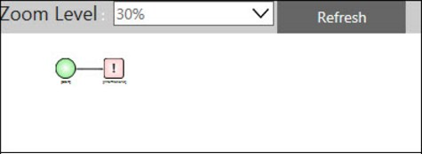
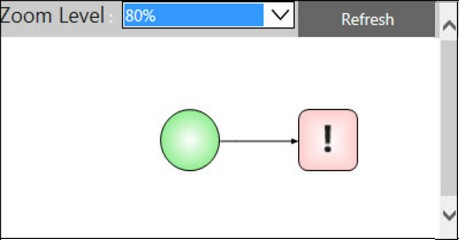

No
AVEVA Work Tasks displays a Process Map Image, which you can use to navigate large processes. You can access this process map by clicking the Zoom tool in the Process Designer tool bar.
The following image shows the Process Map image for navigation:

The Process Map Image shows the process diagram as an image. You can save the displayed image as a PNG or BMP file. You can navigate large and complex processes using the click-able activity icons in this Process Map image. You can click any icon and go to the corresponding activity in the design mosaic of the Process Designer. You can zoom in and out of the Process Diagram by selecting the appropriate percentage from the Zoom Level. The image shown below is displayed at 50% zoom. You can click Refresh to refresh the Process Image displayed in this window.
The following image shows the Process image zoomed:
